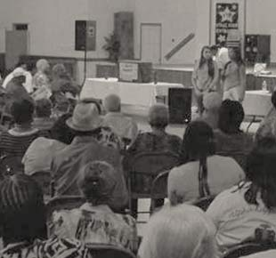

Every summer, Democracy NC hires students from NC colleges and universities to work as paid student organizers for nine weeks under the guidance of an experienced Democracy NC organizer.
In 2015, we will hire 12 students — summer organizers working in teams of 2 in Asheville, Charlotte, Fayetteville, Rocky Mount, or Winston-Salem and one communications intern and one research intern in our Durham, NC office. For more information, see the FAQ section.
Students in the program work full-time (40 + hours per week) from late May to late July and earn a stipend of $2,500 for the summer. This is a full-time job, so students who have to do summer classes or have other, part-time work cannot realistically complete the program.
Democracy Summer starts with a mandatory 3-day training retreat. Then, student organizers work in their host city, organizing for social change. They interact with civic leaders and veteran activists, meet elected officials, experience working with the media and gain an insider's view of the political climate, legislative process and power structure in North Carolina.
The communications intern has a wide range of duties in different areas, including copywriting, graphic and web design and online outreach and advocacy, all related to advancing Democracy NC’s work across the state.
The research intern will conduct policy and advocacy research to advance Democracy NC’s priority campaigns, and work closely with the Communications Intern to translate our substantive work into accessible, public education materials.
Here are some important dates for this year's program. If you have any questions, please email Democracy NC's Training Director, Omisade Burney-Scott at omisade@democracy-nc.org or call 919-908-7919. |
|
| Date | What |
|---|---|
| April 3 | Application Deadline |
| April 12-17 | 1st Round Phone Interviews |
| April 25 | 2nd Round In-Person Interviews |
| April 27 | Finalist Notifications |
| May ? - ? | Mandatory Training (in Durham) |
| June ? | First Day at Placement |
| July ? - ? | Mid-Point Retreat |
| July 31 | Program Ends |
To apply, follow the links below to fill out the application form for the one program you want to be considered for (student organizer, communications intern, or research intern). Note: Apply only to the program you feel best fits your skills and strengths! Learn more about Democracy Summer in our FAQ section.
Please note that only complete applications will be reviewed. Be sure your submitted application includes:
*You will be asked to upload your cover letter and resume as part of the online application.
If you have any questions, please email Democracy NC´s Training Director, Omisade Burney-Scott at omisade@democracy-nc.org or call her at 919-908-7919.